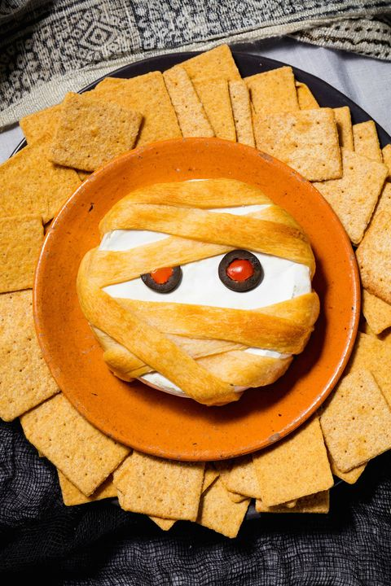

Mummy Brie

Description
Thanks to puff pastry, your basic baked brie becomes a totally spooky Halloween appetizer. Perfect for your Halloween party spread or to snack on while you watch scary movies!
Ingredients
- All-purpose flour, for surface
- 1 Sheet puff pastry, thawed
- 1 (7-oz.) wheel of brie
- 1 large egg
- 1 tbsp. milk
- 2 mini pepperoni
- 2 sliced black olives
Steps
- Preheat oven to 400°. On a floured work surface, unroll puff pastry and cut into 1” strips. Wrap strips around brie like a mummy.
- Whisk together egg and milk and brush over pastry. Transfer brie to a parchment-lined baking sheet.
- Bake until brie is warmed through and gooey and puff pastry is deeply golden, 20 minutes.
- For eyes, place two mini pepperonis into two sliced olives. Serve with crackers.
Back to Homepage